Hilary Oliver
NIWA (NZ)
Cylc: The Path To Exascale
Hilary Oliver, Oliver
Sanders, Dave Matthews
3rd ENES Workshop on Workflows
13 September 2018

Cylc development is part-funded by
ESiWACE
 Exascale Workflow?
Exascale Workflow?-
Cylc (Re-)Introduction
-
Exascale Challenges
 Meeting the Challenges of Exascale
Meeting the Challenges of Exascale Introduction to Rose
Introduction to Rose
The first two task presentation slots are a collaborative effort between myself, Oliver, and Dave. (Hand-coded HTML5, collab on GitHub - eat your heart out Microsoft ... ugh, they bought GitHub).
At the Lisbon workshop 2 years ago I gave more of a tutorial introduction to Cylc, and tried to sell it as the right way to handle cycling workflows.
This time I'll try to give,
- the briefest possible introduction to "what Cylc is like", followed by
- what are Cylc's current limits and deficiencies, in light of upcoming "exascale workflow" challenges
Then Oliver will present our plans on how to address these challenges in the future.
And finally, Dave's gonna talk about Rose and how it relates to Cylc now and in the future.
Exascale Workflow
What do we mean by this???
Exascale Computing
- early-mid 2020s?
- Aurora - Argonne Lab USA, Cray, 2021?
- 1 exaflop = a quintillion (a billion billion) flops
- approx. processing power of the human brain?
- challenges?
- hardware (and power 40MW = $US 40M/year)
- software scaling
- workflow?...
- at any given time, it is estimated that there are ten
quintillion (10,000,000,000,000,000,000) individual insects
alive on earth
- 1/10 flops per individual insect on planet earth!
- (MO 460k cores:"are capable of over 14,000 trillion arithmetic operations per second – that’s more than 2 million calculation per second for every man, woman and child on the planet")
- my son once said his shoe size was 2 limes and a sandwich.
Exascale Workflow?

(we've got this covered)
- Much effort focused on making a new generation of models that can scale these levels
- BUT ACTUALLY: even if the primary purpose of these machines is massive exascale models, much of their time will be spent running many smaller models (e.g ensembles in our business) and processing vast amounts of data generated by them.
- TERMINOLOGY: "suite" == "workflow"

workflow automation is at the heart of utilizing these
massive rescources
That's a partial view of a Met Office global NWP ensemble suite,
current - non exascale!

- A slide borrowed from a talk on the Met Office exascale programme scope, showing that Rose and Cylc will remain part of the mix... bodes well for ongoing investment in Cylc development
- So does involvement of Altair engineering - see upcoming talk from David Block
Cylc (Re-)Introduction
The Cylc Workflow Engine
Hilary Oliver
NIWA (NZ)
NIWA (NZ)
- cycling workflows
- what Cylc is like
Cycling workflows:
- what are they
- why do we need them?
- domain of applicability
- workflow definition
- architecture
- user interface


- repeat cycles...
- ...there's inter-cycle dependence between some task...
- ...which is technically no different to intra-cycle dependence...
- ...no need to label cycle points (boxes) as if they have global relevance...
- ... so you can see this is actually an infinite single workflow that happens to be composed of repeating tasks

The key to a single animation of how cylc manages such an infinite
workflow. (I showed a bunch of these in Lisbon, to compare with other
systems; here just the Cylc version).
Cylc's dynamic cycling mode.
What's cycling needed for?
- clock-limited real time forecasting
- short chunks of a long simulation
- steps in some iterative process (e.g....)
- processing datasets as concurrently as possible
- pipelines
- dynamic cycling is not strictly needed for small, short workflows.
- historically achieved (NWP) with sequential whole cycles.


aside: pipelines
%% This is a comment in mermaid markup
graph LR
A(process
A) B(process
B) C(process
C) A-->B B-->C classDef A1 fill:#d7d7d7,stroke:slategray,stroke-width:5px; classDef B2 fill:#d7d7d7,stroke:slategray,stroke-width:5px; classDef C3 fill:#d7d7d7,stroke:slategray,stroke-width:5px; class A A1 class B B2 class C C3
A) B(process
B) C(process
C) A-->B B-->C classDef A1 fill:#d7d7d7,stroke:slategray,stroke-width:5px; classDef B2 fill:#d7d7d7,stroke:slategray,stroke-width:5px; classDef C3 fill:#d7d7d7,stroke:slategray,stroke-width:5px; class A A1 class B B2 class C C3
%% This is a comment in mermaid markup
graph LR
A(process
A) B(process
B) C(process
C) A-->B B-->C classDef A1 fill:#fcf,stroke:#b8b,stroke-width:5px; classDef B2 fill:#d7d7d7,stroke:slategray,stroke-width:5px; classDef C3 fill:#d7d7d7,stroke:slategray,stroke-width:5px; class A A1 class B B2 class C C3
A) B(process
B) C(process
C) A-->B B-->C classDef A1 fill:#fcf,stroke:#b8b,stroke-width:5px; classDef B2 fill:#d7d7d7,stroke:slategray,stroke-width:5px; classDef C3 fill:#d7d7d7,stroke:slategray,stroke-width:5px; class A A1 class B B2 class C C3
%% This is a comment in mermaid markup
graph LR
A(process
A) B(process
B) C(process
C) A-->B B-->C classDef A1 fill:#cff,stroke:#8bb,stroke-width:5px; classDef B2 fill:#fcf,stroke:#b8b,stroke-width:5px; classDef C3 fill:#d7d7d7,stroke:slategray,stroke-width:5px; class A A1 class B B2 class C C3
A) B(process
B) C(process
C) A-->B B-->C classDef A1 fill:#cff,stroke:#8bb,stroke-width:5px; classDef B2 fill:#fcf,stroke:#b8b,stroke-width:5px; classDef C3 fill:#d7d7d7,stroke:slategray,stroke-width:5px; class A A1 class B B2 class C C3
%% This is a comment in mermaid markup
graph LR
A(process
A) B(process
B) C(process
C) A-->B B-->C classDef A1 fill:#ffc,stroke:#bb8,stroke-width:5px; classDef B2 fill:#cff,stroke:#8bb,stroke-width:5px; classDef C3 fill:#fcf,stroke:#b8b,stroke-width:5px; class A A1 class B B2 class C C3
A) B(process
B) C(process
C) A-->B B-->C classDef A1 fill:#ffc,stroke:#bb8,stroke-width:5px; classDef B2 fill:#cff,stroke:#8bb,stroke-width:5px; classDef C3 fill:#fcf,stroke:#b8b,stroke-width:5px; class A A1 class B B2 class C C3
%% This is a comment in mermaid markup
graph LR
A(process
A) B(process
B) C(process
C) A-->B B-->C classDef A1 fill:#d7d7d7,stroke:slategray,stroke-width:5px; classDef B2 fill:#ffc,stroke:#bb8,stroke-width:5px; classDef C3 fill:#cff,stroke:#8bb,stroke-width:5px; class A A1 class B B2 class C C3
A) B(process
B) C(process
C) A-->B B-->C classDef A1 fill:#d7d7d7,stroke:slategray,stroke-width:5px; classDef B2 fill:#ffc,stroke:#bb8,stroke-width:5px; classDef C3 fill:#cff,stroke:#8bb,stroke-width:5px; class A A1 class B B2 class C C3
%% This is a comment in mermaid markup
graph LR
A(process
A) B(process
B) C(process
C) A-->B B-->C classDef A1 fill:#d7d7d7,stroke:slategray,stroke-width:5px; classDef B2 fill:#d7d7d7,stroke:slategray,stroke-width:5px; classDef C3 fill:#ffc,stroke:#8bb,stroke-width:5px; class A A1 class B B2 class C C3
A) B(process
B) C(process
C) A-->B B-->C classDef A1 fill:#d7d7d7,stroke:slategray,stroke-width:5px; classDef B2 fill:#d7d7d7,stroke:slategray,stroke-width:5px; classDef C3 fill:#ffc,stroke:#8bb,stroke-width:5px; class A A1 class B B2 class C C3
%% This is a comment in mermaid markup
graph LR
A(process
A) B(process
B) C(process
C) A-->B B-->C classDef A1 fill:#d7d7d7,stroke:slategray,stroke-width:5px; classDef B2 fill:#d7d7d7,stroke:slategray,stroke-width:5px; classDef C3 fill:#d7d7d7,stroke:slategray,stroke-width:5px; class A A1 class B B2 class C C3
A) B(process
B) C(process
C) A-->B B-->C classDef A1 fill:#d7d7d7,stroke:slategray,stroke-width:5px; classDef B2 fill:#d7d7d7,stroke:slategray,stroke-width:5px; classDef C3 fill:#d7d7d7,stroke:slategray,stroke-width:5px; class A A1 class B B2 class C C3
[scheduling]
[[dependencies]]
[[[P1]]]
graph = """A => B => C
A[-P1] => A
B[-P1] => B
C[-P1] => C"""


[scheduling]
[[dependencies]]
[[[P1]]]
graph = """A => B => C"""

- the cycling way allows different things to happen at different cycles, if you need it.
What is Cylc (currently) Like?
- complex "macro-scale" cycling workflows in HPC
- text config file (with programmatic templating)
- treat workflow definitions like source code
- efficiency: inheritance, graph notation, templating
- flexible and general
- utilize any command, script, or program, as a task
- makes no assumptions about data movement
- ANY date-time or integer cycling sequence
- distributed architecture - no central server
- ETC.
Not currently well suited to large numbers of small quick-running jobs (later...)
A workflow is primarily a configuration of the workflow engine, and a config file is easier for most users and most use cases than programming to a Python API. However, ...!
ETC. event handling, checkpointing, extreme restart, ...
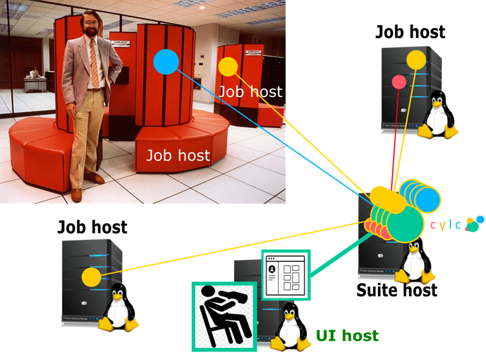


# Hello World! Plus
[scheduling]
[[dependencies]]
graph = "hello => farewell & goodbye"
# Hello World! Plus
[scheduling]
[[dependencies]]
graph = "hello => farewell & goodbye"
[runtime]
[[hello]]
script = echo "Hello World!"
# Hello World! Plus
[scheduling]
[[dependencies]]
graph = "hello => farewell & goodbye"
[runtime]
[[hello]]
script = echo "Hello World!"
[[[environment]]]
# ...
[[[remote]]]
host = hpc1.niwa.co.nz
[[[job]]]
batch system = PBS
# ...
# ...
# ...
Plus:
- [runtime] is an inheritance heirarchy for efficient sharing of common settings

#!Jinja2
{% set SAY_BYE = false %}
[scheduling]
[[dependencies]]
graph = """hello
{% if SAY_BYE %}
=> goodbye & farewell
{% endif %}
"""
[runtime]
# ...


[[dependencies]]
graph = "pre => sim<M> => post<M> => done"
# with M = 1..5

[[dependencies]]
graph = "prep => init<R> => sim<R,M> => post<R,M> => close<R> => done"
# with M = a,b,c; and R = 1..3
[cylc]
cycle point format = %Y-%m
[scheduling]
initial cycle point = 2010-01
[[dependencies]]
[[[R1]]]
graph = "prep => foo"
[cylc]
cycle point format = %Y-%m
[scheduling]
initial cycle point = 2010-01
[[dependencies]]
[[[R1]]]
graph = "prep => foo"
[[[P1M]]]
graph = "foo[-P1M] => foo => bar & baz => qux"
[cylc]
cycle point format = %Y-%m
[scheduling]
initial cycle point = 2010-01
[[dependencies]]
[[[R1]]]
graph = "prep => foo"
[[[P1M]]]
graph = "foo[-P1M] => foo => bar & baz => qux"
[[[R2/^+P2M/P1M]]]
graph = "baz & qux[-P2M] => boo"

Exascale Challenges
Present capabilities and challenges
Hilary Oliver
NIWA (NZ)
NIWA (NZ)
A brief note on success so far, since I'm about to launch into what needs improving!
- As advertised, can construct all kinds of cycling workflows for NWP and climate, in research and production
- NIWA: "lights out" operation (30 production workflows) with Cylc
since 2011?
- currently about 20k cores XC50
- Met Office: 460,000 core HPC (most powerful weather and climate machine in the world): entire workload managed with Cylc
This is a technical necessity, to survive into the exascale era!
Immediate: Web GUIs, Python 3

- Python 2 is near end of life
- PyGTK GUIs are near obsolete
- web GUI work starting
- need new architecture!
THEN: scaling; config API; visualization;
light sub-suites...
Even if the primary purpose of these machines is for massive exascale models, much of the time will still be spent running large numbers of smaller models, and associated data processing.


- 3 cycles of a small deterministic regional NWP suite. Obs processing tasks in yellow. Atmospheric model red, plus DA and other pre and post-processing tasks A few tasks ... generates thousands of products from a few large model output files.
- ... now a 10-member ensemble, ~450 tasks (3 cycles)
- ... now a 30-member ensemble, ~1300 tasks (3 cycles).
Cylc currently scales to 10ks of tasks (with caveats)
- Tested sans GUI at 50k tasks (need lots of RAM)
- Fine for "normal" large ensemble suites
- multi-dimensional (nested) cycling
- many small tasks ... with non-trivial dependencies
- automatic reconfiguration of huge suites
(caveats: amount of config per task; amount of runahead; server
resources; GUI, esp. graph view)
- Met Office IMPROVER: 100k jobs per cycle.
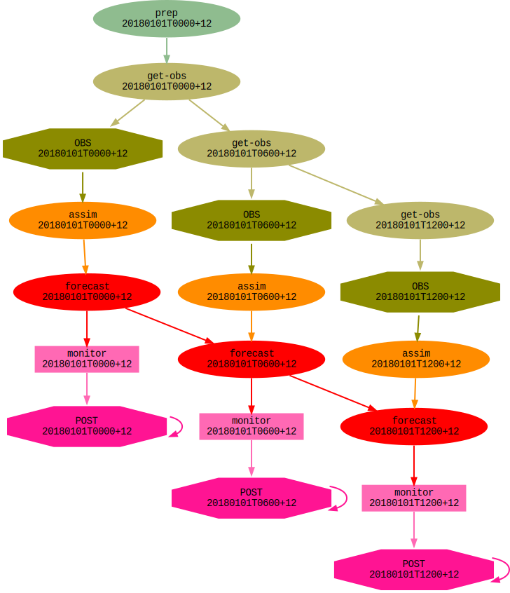
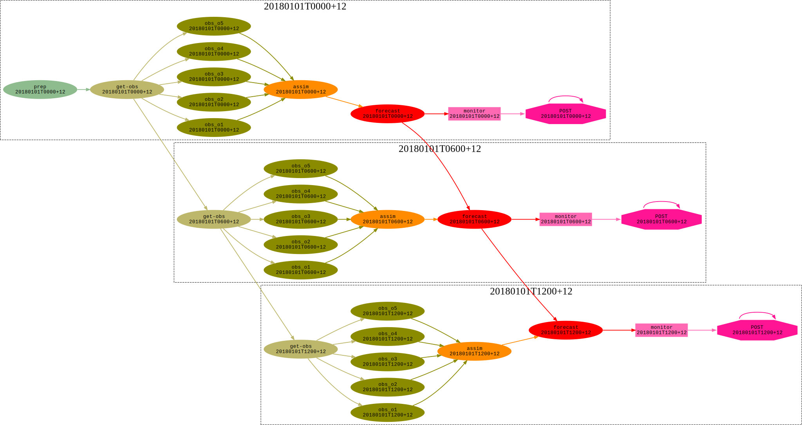
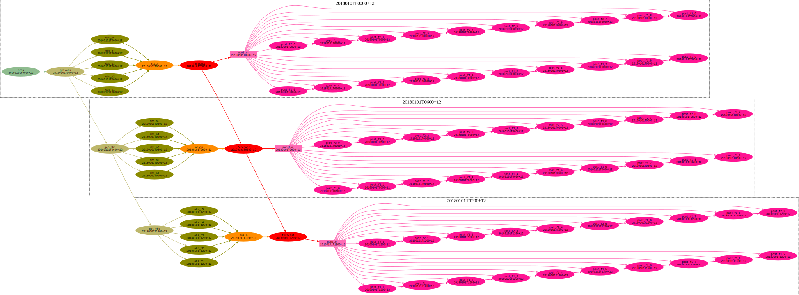
1 member, 2 files/fc-hour for 10 fc-hours,
1 tasks/file = 1 x 2 x 10 x 1 = 20 jobs per cycle ...
30 members, 7 files/fc-hour for 10 fc-days, 5 tasks/file ...
30 x 7 x (24x10) x 5 = 250,000 jobs per cycle!
5 tasks per file: each of the (expanded) pink nodes is a workflow!
Problem is the parameterized "nested cycle" over forecast hour. To handle this NOW, we need:
- a lot of bunching of small jobs, or
- sub-suites: super-efficient dynamic cycling, but:
- 30+ suites (per cycle) instead of 1 suite!
- log directory housekeeping?
- start-up, kill, restart, failure recovery etc.?
- either way: too many log files - 5+ per job
- (FS and resource manager also bottlenecks now)
- NOTE: the HPC infrastructure can't handle this yet either!
- these tasks totally dominate the workflow
- cylc can have multiple "top-level" cycling sequences in one suite, but not nested cycling
BUT actually it's worse than this!
Real ensemble post-processing systems may:- aggregate output from multiple model suites
- have complex verification + product-generation workflows that are not bunching-friendly
- require automatic (or even dynamic) structural re-configuration to swap different product modules (e.g.) in and out
- not bunching friendly: complex dependencies within the bunch
we think we know how to address these problems
- planned general efficiency gains
- event-driven "spawn-on-demand" scheduling
- scheduler kernel for light-weight "sub-suites" that don't generate all the usual job log files
- Python workflow configuration API
- self-assembling workflow (instead of "graph =...")
- ...
Meeting Exascale Challenges
An outline of some potential pathways for future development
Oliver Sanders
Met Office (UK)
New Cylc GUI


Combine gscan & gcylc

View N Edges To Selected Node
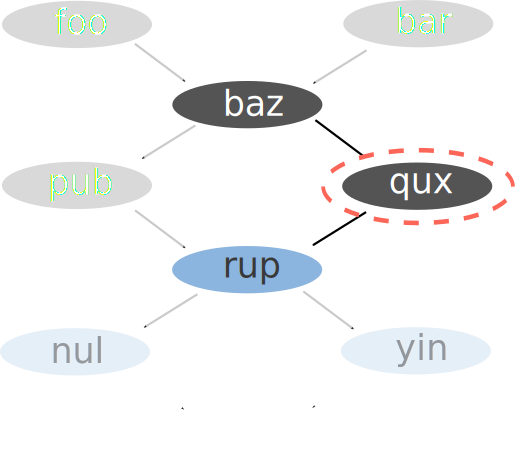 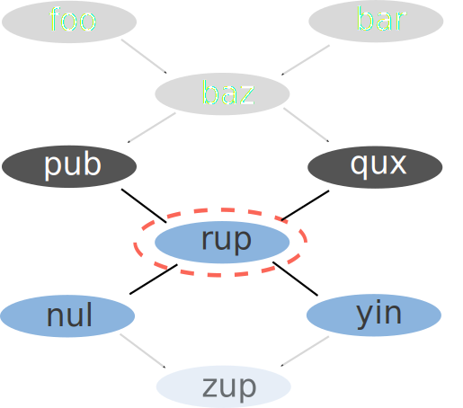Alternative Views

- Gant chart
- Adjacency matrix
- Other?
The Modularity Problem
- We can split the suite.rc into multiple files but...
- Suites are monolithic
- Developing components in isolation is difficult
It's hard to incorporate a module into a workflow

Ideally we would write dependencies to/from the module itself rather than the tasks within it

Workflows could be represented as tasks

foo => baz => module<param> => pub
Python API
Python > Jinja2
Illustrative examples Python could provide Cylc:
bar = cylc.Task('myscript')
cylc.run(
foo >> bar >> baz
)Use Python data structures as Cylc parameters:
animal = cylc.Parameter({
'cat': {'lives': 9, 'memory': 2},
'dog': {'lives': 1, 'memory': 10}
})
baz = cylc.TaskArray('run-baz',
args=('--animal', animal),
env={'N_LIVES': animal['lives']}),
directives={'--mem': animal['memory']}
)Use Python to write Cylc modules:
import my_component
graph = cylc.graph(
foo >> bar >> my_component >> baz,
my_component.pub >> qux
)Alternative Scheduling Paradigms
Abstract dependency
foo => bar => baz
Data dependency
foo:
out: a
bar:
in: a
out: b
baz:
in: a, b
out: c
- Compute resource dependency?
- Others?
Scaling With Dependencies
Cylc can currently scale to tens of thousands of tasks and dependencies
But there are limitations, for example:

Many to many triggers result in NxM dependencies

Cylc should be able to represent this as a single dependency
The scheduling algorithm currently iterates over a "pool" of tasks.
We plan to re-write the scheduler using an event driven approach.
This should make Cylc more efficient and flexible model solving problems like this.
Kernel - Shell Architecture
Working towards a leaner Cylc we plan to separate the codebase into a Kernel - Shell model
Shell |
Kernel |
| User Commands | Scheduler |
| Suite Configuration | Job Submission |
Batching Jobs
Combining multiple jobs to run in a single job submission.

Arbitrary Batching
A lightweight Cylc kernel could be used to execute a workflow within a job submission.

- The same Cylc scheduling algorithm
- No need for job submission
- Different approach to log / output files
Future Challenges
- Container technology
- Computing in the cloud
- File system usage
Introduction to Rose
Storage and configuration of complex Cylc workflows
David Matthews
Met Office (UK)
Met Office (UK)
History
Development started late 2011 around the time we chose cylc as our workflow tool
Motivation
- GUI for application configuration
- Suite version control & identification
- Enable support of multiple workflow tools
- Cylc may not have worked out?
- Collaborators might require other tools?
- Provide essential features which were outside of the Cylc vision
- GUI for application configuration
- Suite version control & identification
- Enable support of multiple workflow tools
- Cylc may not have worked out?
- Collaborators might require other tools?
- Provide essential features which were outside of the Cylc vision
Tools which have moved / will move into Cylc
- Log file retrieval
- Email notifications
- rose bush - log file viewer
- rose suite-run - suite installation
- rose host-select -> cluster support
- rose bunch - run multiple small tasks in one job
- Housekeeping
Tools which will remain in Rose
rose edit / task-run - Application configuration
rosie - suite storage and discovery
(plus a fewer smaller, more specialised utilities)
Application configuration: The problem
Tasks may be complex to define, requiring
- setting environment variables
- input files (containing namelists or otherwise)
- scripts
- etc
Rose applications provide a convenient way to encapsulate all of this configuration, storing it all in one place to make it easier to handle and maintain.
In suite.rc:
[runtime]
[[hello]]
script = rose task-runThis will run an app config named "hello" (by default)
An app config is a directory containing a file named rose-app.conf
Simple ini style format (similar to Cylc suite.rc)
Describes:
- command to run
- environment variables
- input files containing namelists
- files to install (copy, link, export from Subversion)
rose-app.conf example
[command]
default=echo "Hello ${WORLD}!"
[env]
WORLD=Earth
[file:input.nml]
source=namelist:latlon
[namelist:latlon]
latitude=52.168
longitude=5.744App config directory may also contain other directories:
- bin/ - executables (automatically added to $PATH when running the app)
- file/ - static input files which are automatically copied into the working directory when the app runs
- meta/ - metadata file describing app configuration
Metadata - What's it used for?
Documenting settings
Performing automatic checking (e.g. type checking)
Formatting the rose config-edit GUI
rose-app.conf:
[env]
WORLD=Earthmeta/rose-meta.conf:
[env=WORLD]
description=The name of the world to say hello to
values=Mercury, Venus, Earth, Mars, Jupiter,
=Saturn, Uranus, NeptuneExample: if we were to change the value of WORLD to Pluto
$ rose macro -V
Value Pluto not in allowed values
['Mercury', 'Venus', 'Earth', 'Mars', 'Jupiter',
'Saturn', 'Uranus', 'Neptune']
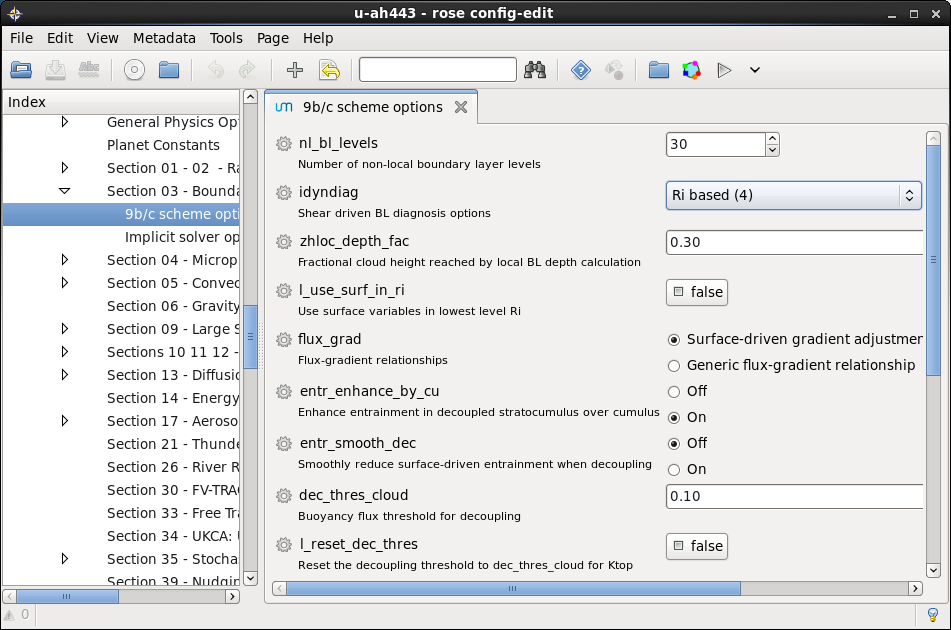
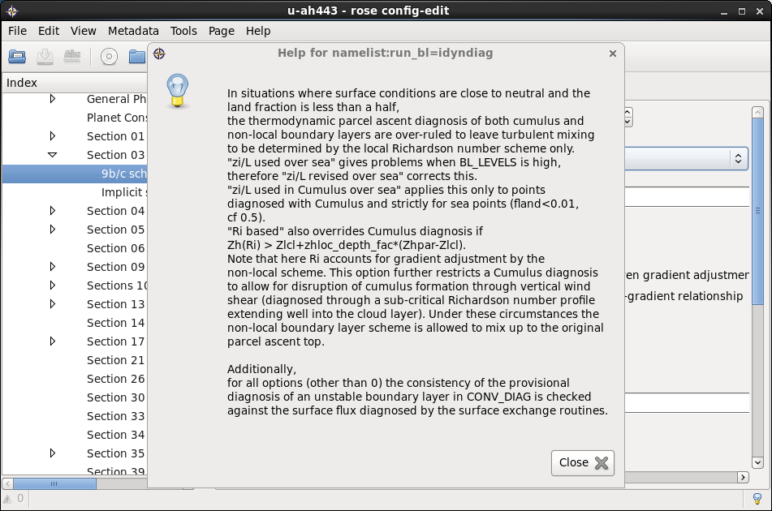
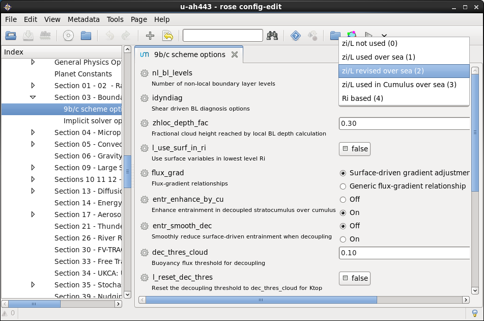
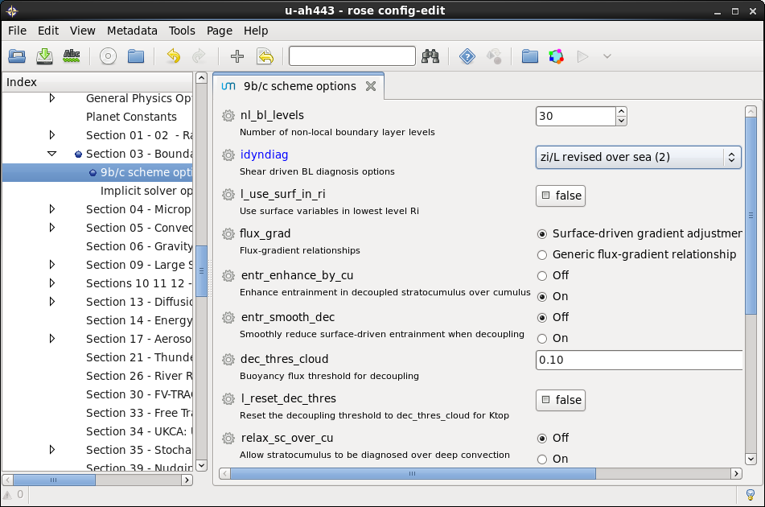
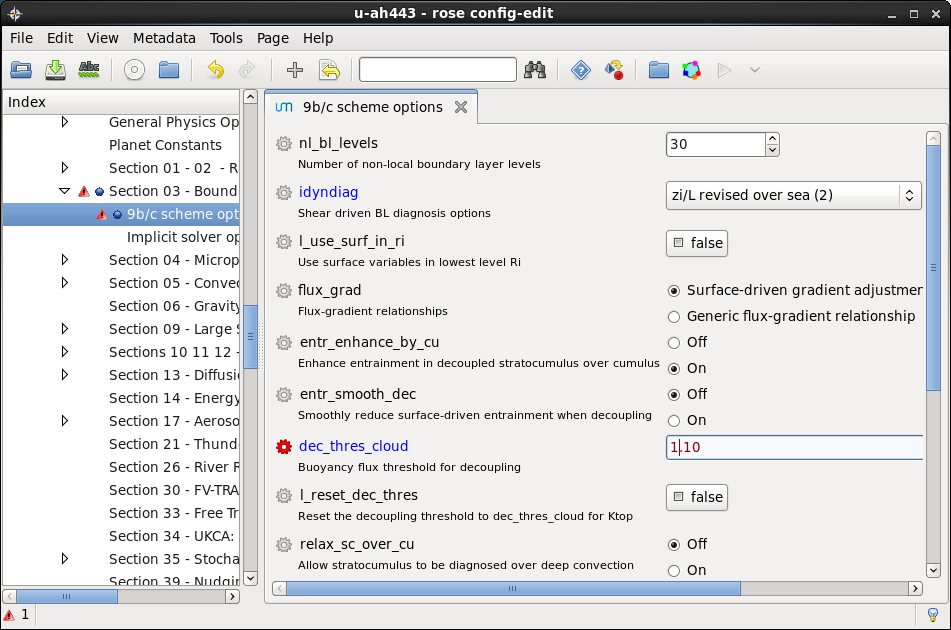
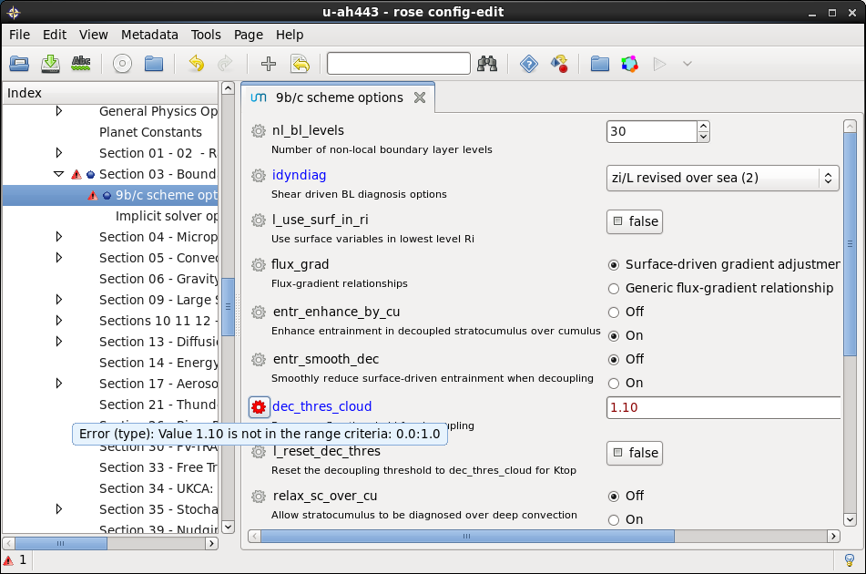
Metadata location
metadata can be local to the app or centrally installed (e.g. the metadata for a particular model release)
rose-app.conf:
meta=um-atmos/vn11.1rose macro - usage
- Validation
- check against metadata
- custom - e.g. check config meets requirements for a production run
- Transformation
- add, delete, rename variables, etc
- e.g. upgrade to new model release
Optional configs
Configuration files which can add to or overwrite the default
rose-app.conf configuration.
Used for minor variants, e.g.
- Ensembles
- Modifed behaviour on task retry
- Different times of day
- Site config differences
Why Use Rose App Configs?
Encapsulate required inputs and environment required in a simple human-readable configuration.
Settings can have associated metadata & macros.
Edit using a text editor or with rose config-edit GUI.
Optional configurations avoid the need to duplicate app configs for minor variants
rosie - suite storage & discovery
Suites are version controlled using Subversion
- Each suite has its own trunk
- Branches can be used for developing changes, etc
Each Rosie suite is assigned a unique name.
e.g.: mo-aa001
Each suite has a rose-suite.info file which provides information about the suite. e.g.
title=PS40 high resolution trial
project=global-nwp-trial
description=Copy of u-af326/trunk@23458
owner=davidmatthews
access-list=oliversandersParticular projects can define their own metadata requirements which are enforced.
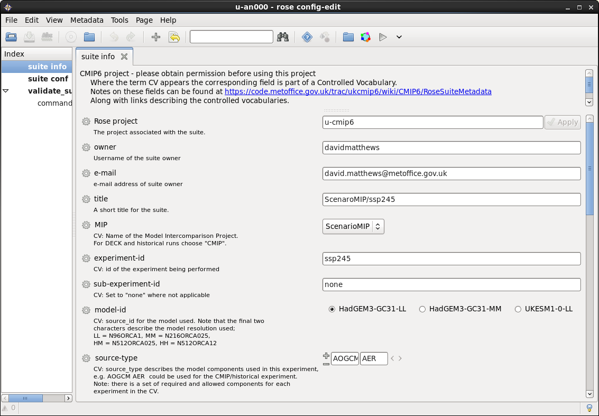
rosie features
- Create a copy of a suite (with a new unique name)
- Checkout suites
- Lookup suites (using the metadata)
Use from the command line or use the GUI

Why Consider Using Rosie?
You want to take advantage of the suite storage, identification and discovery features
And
You're comfortable using Subversion for version control
Rose: Roadmap
Complete migration of Rose functionality into Cylc.
Replace current GTK based GUIs with plugins to Cylc web GUI.
Port to Python 3.